라이브 서비스에서 팀과 협업하며 문제를 해결하고, AI로 개발 방식을 바꿔 왔습니다.
플레이링스에서 2023년 3월(산업기능요원 입사)부터 소셜 카지노 슬롯을 개발하고 있습니다. 기획, 아트, 서버 담당자와 맞춰 가며 신규 슬롯 약 20종을 만들었습니다. 지금은 AI로 사전 검증과 구현을 하고, 퇴근 후에는 같은 방식으로 Unity 게임을 만듭니다.
| 실무 | Cocos2d-JS · JavaScript · C++ (엔진 코드 분석) · Git |
|---|---|
| 개인 프로젝트 | Unity 6 · C# / DirectX 12 · 9 · C++ · HLSL / Unreal Engine 5 |
| AI 도구 | Claude Code · Codex |
프로젝트 규칙과 슬롯 도메인 지식을 문서로 쌓아 두고, 코드를 쓰기 전에 AI가 기획서와 아트 리소스, 서버 코드를 먼저 대조하게 합니다. AI가 모르는 새 기획 요소는 제가 판단해서 문서에 추가합니다.
슬롯 하나는 보통 8주 동안 만듭니다. 사전 검증에서는 리소스 오타나 기획 오류를 개발 전에 찾아 해결합니다. 개선 회의에서는 연출과 아트 피드백을 반영하고, 룰이 바뀌면 개발 가능 여부를 확인합니다. 회의에서 직접 아이디어도 냅니다. 코드는 대부분 AI가 작성합니다.
신규 슬롯과 함께, 오래된 슬롯의 룰을 조금 바꾸고 코드를 공용 모듈로 옮기는 리워크도 맡습니다.
AI를 쓰기 전, 팀원이 막힌 이슈를 처음으로 제가 풀어 준 일이라 기억에 남습니다.
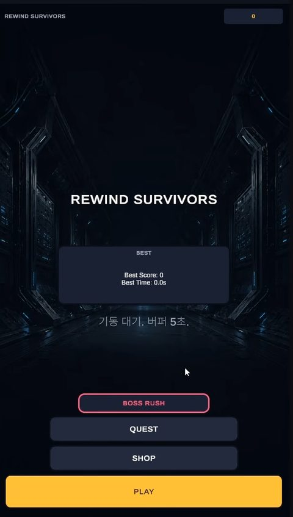
①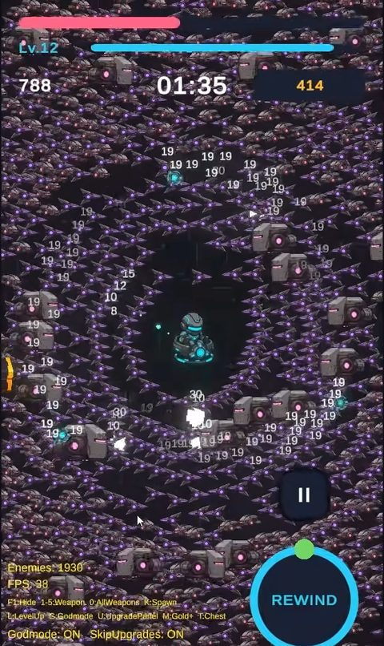
②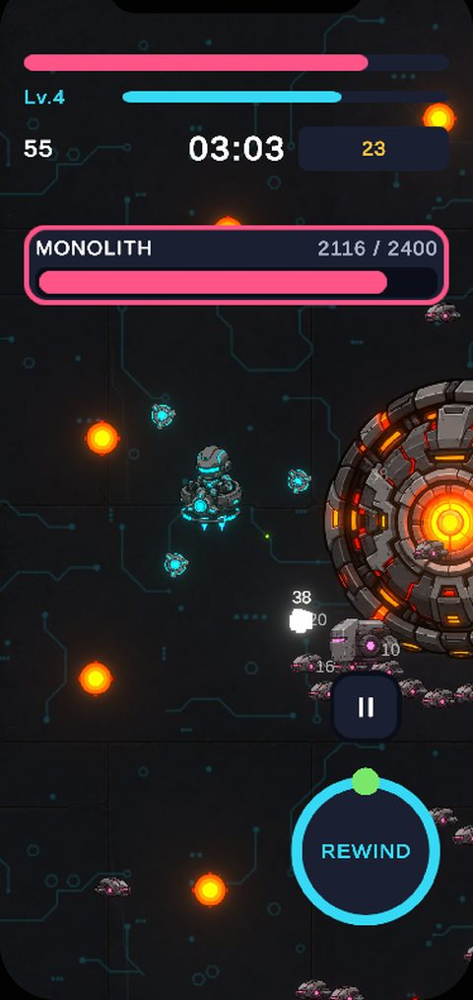
③회사에서는 Cocos2d-JS만 써서, 상용 엔진으로 끝까지 만든 게임이 없었습니다. Unity로 배포까지 해 보고, AI로 어디까지 만들 수 있는지도 알고 싶었습니다. 코드는 대부분 AI가 썼습니다.
0.05초마다 플레이어, 적, 웨이브, 보스 상태를 기록해 두고, 되돌릴 때 최신 기록부터 거꾸로 적용합니다. 기록은 100칸짜리 원형 버퍼에 담아, 오래 플레이해도 칸이 늘지 않게 했습니다.
문제는 적을 오브젝트 풀로 재사용한다는 점이었습니다. 풀에서 다시 꺼낸 적은 5초 전과 같은 오브젝트지만 다른 적입니다. 기록을 그대로 덮으면 죽은 적의 상태가 엉뚱한 적에게 씌워집니다.
생존 모드를 완성한 뒤 탐험 모드를 붙였습니다. 기획은 얕게만 정하고 나머지는 AI에게 맡겼는데, 화면이 그럴듯하게 나올 때마다 조금씩 고쳐 달라고 하다 보니 게임이 점점 이상해졌습니다. 시야가 좁아 세로 화면을 가로로 바꿨고, UI 배치도 처음부터 다시 정해야 했습니다. 무엇을 만들지, 아트 방향은 무엇인지 정하지 않고 시작한 게 원인이었고, 탐험 모드는 접었습니다.
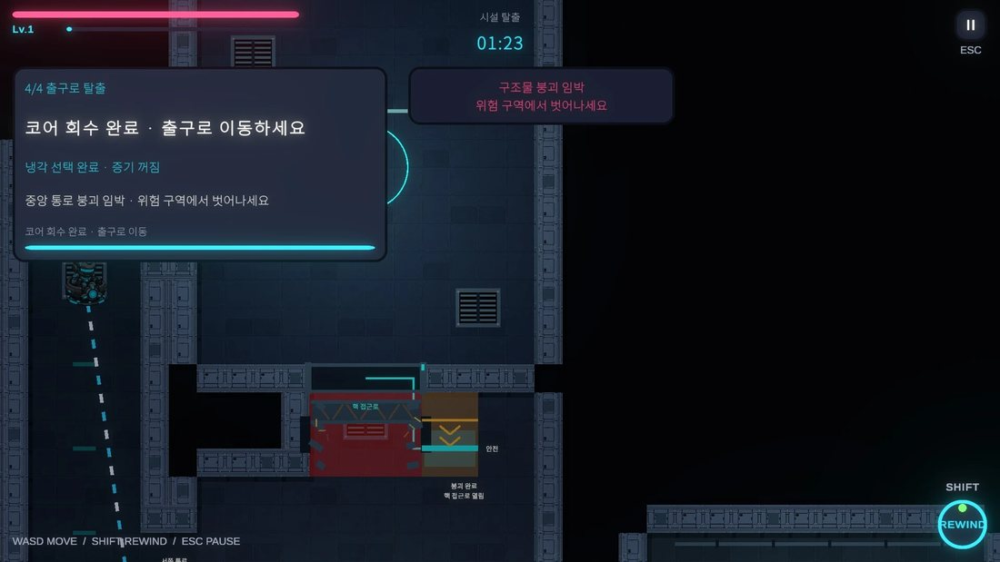
④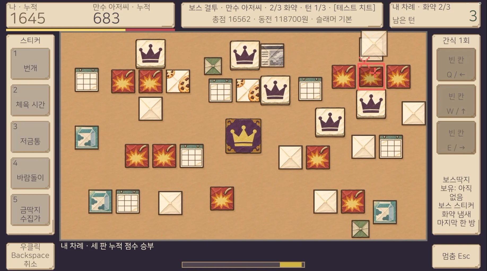
Rewind의 탐험 모드처럼 화면을 보며 고쳐 나가다 실패하지 않으려고, 코드보다 게임 규칙을 먼저 문서로 정리했습니다. 방향, 범위, 조작 방식처럼 사람이 정해야 할 것은 직접 결정하고 기록했습니다.
코드는 AI가 쓰고, 결과는 코드 검토보다 자동 테스트로 확인합니다.
AI와 함께 쓴 기획서에는 벽에 막힌 바람이 튕겨 나와 딱지를 뒤집는 벽 반사 규칙이 있었습니다. 구현까지 했지만, 직접 플레이해 보니 반사가 일어나는 걸 알고 봐도 눈에 띄지 않았습니다.
비슷한 아이디어도 재미를 확인하기 전에는 만들지 않고 후보로만 남겼습니다. 손맛처럼 자동 테스트로 알 수 없는 것은 계속 직접 플레이하며 확인합니다.
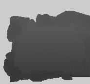
①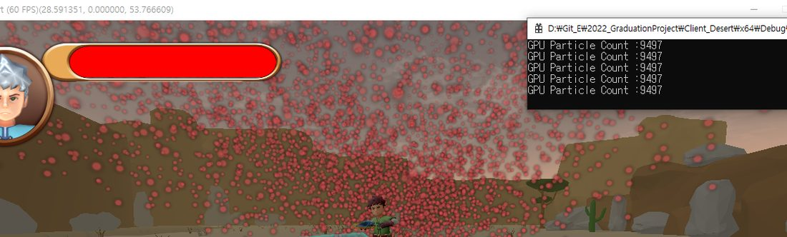
②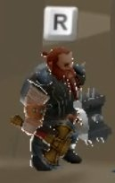
③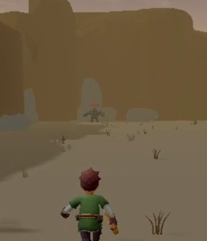
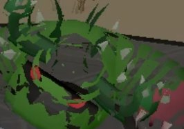
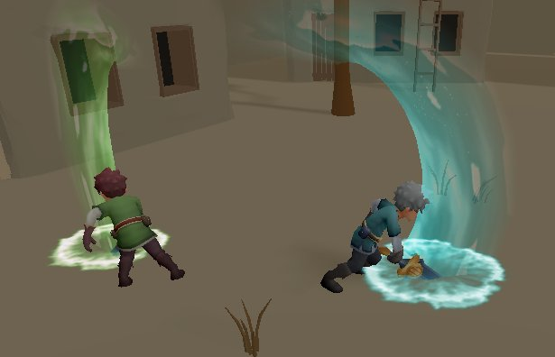
④맵은 Unity에서 배치해 파일로 내보내고, C++에서 읽어 씬을 구성했습니다. 플레이어와 맵의 충돌 방식은 세 번 바꿨습니다.
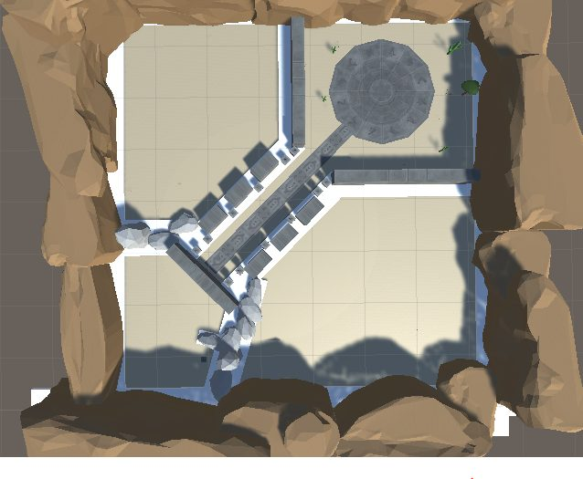
③| 프로젝트 | 시기 | 환경 | 인원 | 메모 | 링크 |
|---|---|---|---|---|---|
| Chatting Server | 2025.03 ~ 04 | C++ · IOCP | 1인 | 강의 기반 학습 | 영상 · GitHub |
| UNSEEN Project | 2024.04 ~ 08 | UE5 · C++ · GAS | 1인 | UNSEEN 과정에서 배운 GAS로 제작 | 영상 · GitHub |
| 2 vs 2 Fight | 2021.11 ~ 12 | WinAPI · TCP · C++ | 3인 | 스레드 동기화, 충돌, 송수신 담당 | 영상 · GitHub |
| Monster Rush | 2021.09 ~ 12 | Unity · C# | 3인 | GitHub | |
| Escape the Train | 2021.04 ~ 06 | Unity · C# | 3인 | 영상 · Bitbucket | |
| Raji 모작 | 2020.12 ~ 2021.02 | DirectX 9 · C++ | 5인 | 플레이어, 보스 담당 | 영상 |
| Dungeon Defenders 모작 | 2020.11 ~ 12 | DirectX 9 · C++ · MFC | 1인 | 영상 | |
| Ion Fury 모작 | 2020.08 ~ 09 | DirectX 9 · C++ · MFC | 4인 | 영상 | |
| Dungreed 모작 | 2020.07 | DirectX 9 · C++ · MFC | 1인 | 영상 | |
| Wizard of Legend 모작 | 2020.05 ~ 06 | WinAPI · C++ | 1인 | 영상 |